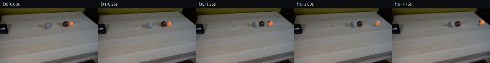

![首帧]()

Round 00
2026-11-04T21:45:17.062438+00:00像素候选变化代码 +327/−0inspection 更新
pixels a49d6ff82c1f71f2 · code 7b7bc2ac3a3f8ca6
查看本轮 generate.py 真实 diff
--- previous/generate.py
+++ current/generate.py
@@ -0,0 +1,327 @@
+"""Deterministic local RGB continuation of the supplied locked-camera frame.
+
+Uses only local image pixels, NumPy/SciPy/OpenCV pixel operations and an analytic
+rolling-sphere simulation. No image display, external model, or external renderer.
+"""
+from pathlib import Path
+import json
+import math
+import numpy as np
+import cv2
+from PIL import Image, ImageDraw
+from scipy.ndimage import gaussian_filter, distance_transform_edt, map_coordinates
+from scipy.spatial.transform import Rotation
+from artifact_io import save
+
+ROOT = Path(__file__).resolve().parent
+TMP = ROOT / '.tmp'
+TMP.mkdir(exist_ok=True)
+SOURCE = np.asarray(Image.open(ROOT / 'first_frame.png').convert('RGB'))
+H, W = SOURCE.shape[:2]
+Y, X = np.mgrid[:H, :W]
+F = SOURCE.astype(np.float64)
+NAMES = ['grey', 'brown', 'orange']
+CENTERS = np.array([[125.7,45.9], [170.1,40.8], [185.0,40.1]])
+RADII = np.array([8.0,7.7,7.3])
+DRAW_RADII = np.array([[8.55,8.45], [8.45,8.10], [7.75,7.70]])
+PROJECTION = .48
+FRICTION = 6.5
+RESTITUTION = .84
+
+
+def clean_table():
+ """Local missing-pixel reconstruction, keeping the rest of the frame exact."""
+ holes = (((X-120.0)/19.8)**2 + ((Y-46.2)/10.4)**2 < 1)
+ holes |= (((X-171.3)/26.0)**2 + ((Y-41.1)/11.4)**2 < 1)
+ repaired = cv2.inpaint(SOURCE, holes.astype(np.uint8)*255, 4,
+ cv2.INPAINT_TELEA).astype(float)
+ # Restore a small amount of measured grain to the smooth inpainted interiors.
+ grain = F - gaussian_filter(F, (1.0,1.0,0))
+ reference = grain[62:94,95:223]
+ gy = (Y - 31) % reference.shape[0]
+ gx = (X - 96) % reference.shape[1]
+ edge_distance = distance_transform_edt(holes)
+ weight = np.clip((edge_distance-1.0)/3.0,0,1)
+ repaired += reference[gy,gx]*weight[:,:,None]*.65
+ result = F.copy()
+ result[holes] = repaired[holes]
+ return result, holes
+
+
+CLEAN, HOLES = clean_table()
+
+
+def simulate():
+ """Two-dimensional table-plane positions, equal mass collision impulses."""
+ pos = np.column_stack((CENTERS[:,0],
+ (CENTERS[:,1]+RADII)/PROJECTION))
+ velocity = np.zeros((3,2))
+ direction = pos[1]-pos[0]
+ velocity[0] = direction / np.linalg.norm(direction) * 36.0
+ # Plane normal in camera coordinates. Accumulate rigid rolling orientation.
+ plane_normal = np.array([0.,-math.sqrt(1-PROJECTION**2),PROJECTION])
+ rotations = np.repeat(np.eye(3)[None,:,:],3,axis=0)
+ states = [(pos.copy(),velocity.copy(),rotations.copy())]
+ events=[]
+ dt=1/1000
+ for tick in range(1,4751):
+ speed=np.linalg.norm(velocity,axis=1)
+ decrement=np.minimum(speed,FRICTION*dt)
+ next_velocity=velocity * np.divide(speed-decrement,speed,
+ out=np.zeros_like(speed),where=speed>0)[:,None]
+ movement=(velocity+next_velocity)*(.5*dt)
+ pos += movement
+ for i in range(3):
+ d3=np.array([movement[i,0], PROJECTION*movement[i,1],
+ math.sqrt(1-PROJECTION**2)*movement[i,1]])
+ omega=np.cross(plane_normal,d3)/RADII[i]
+ rotations[i]=Rotation.from_rotvec(omega).as_matrix()@rotations[i]
+ velocity=next_velocity
+ # Multiple impulse passes handle the immediate three-ball contact chain.
+ for _ in range(5):
+ for i,j in [(0,1),(1,2),(0,2)]:
+ delta=pos[j]-pos[i]
+ distance=np.linalg.norm(delta)
+ normal=delta/max(distance,1e-12)
+ contact_radius=RADII[i]+RADII[j]
+ closing=np.dot(velocity[j]-velocity[i],normal)
… diff truncated; 240 more lines …